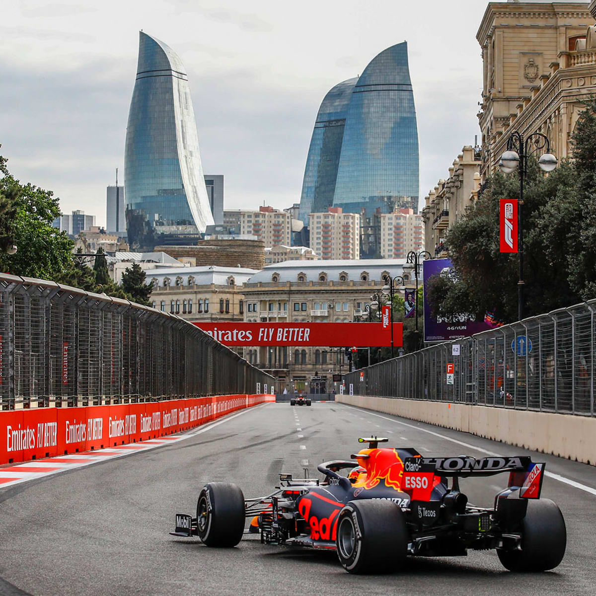

Xoş gəldiniz!
10 il, 35 mindən çox müraciət: Azərbaycan Qran-Prisinin görünməyən qəhrəmanları

Bakıdan Monakoya, Ostindən Əbu-Dabiyə – Azərbaycanlı marşallar son 10 ildə yalnız yerli yarışın deyil, dünyanın müxtəlif Formula 1 Qran-Prilərinin də bir hissəsinə çevriliblər. Formula 1 Azərbaycan Qran-Prisinin 10 illik tarixində marşal olmaq üçün 35 mindən çox müraciət daxil olub. Bu rəqəm proqramın illər ərzində artan populyarlığını və Bakıda formalaşan marşal heyətinin keçdiyi inkişaf yolunu əks etdirir. 2016-cı ildə Bakıda keçirilən ilk Formula 1 yarışı zamanı marşalların böyük hissəsi Bəhreyndən cəlb edilmişdisə, artıq 2017-ci ildə onların mütləq əksəriyyətini yerli marşallar təşkil edib.
Müraciətlərin sayı da bu marağın necə dəyişdiyini göstərir: 2017-ci ildə marşal olmaq üçün 2379 nəfər müraciət etmişdisə, 2026-cı ildə bu göstərici 4201-ə yüksəlib. Azərbaycan Qran-Prisinin 10-cu yubiley yarışında 40 marşal postunda 1100 marşalın iştirakı nəzərdə tutulur. Bakıdan dünya Qran-Prilərinə Azərbaycanlı marşalların qazandığı təcrübə artıq Bakı yarışı ilə məhdudlaşmır. Hər il təxminən 25–30 yerli marşal müxtəlif Formula 1 yarışlarında çalışmaq üçün xarici ölkələrə səfər edir.
2026-cı ildə iki azərbaycanlı marşal ilk dəfə Formula 1-in ən məşhur yarışlarından biri olan Monako Qran-Prisində fəaliyyət göstərib. Monakoda əsasən yerli marşallara üstünlük verilməsi və xaricdən iştirak imkanlarının məhdud olması bu nəticəni xüsusilə əlamətdar edir.
Azərbaycanlı marşalların beynəlxalq yarışlarda qazandığı təcrübənin nümunələri arasında ABŞ və Əbu-Dabi Qran-Priləri də var. Belə ki, 2021-ci ildə ABŞ-nin Ostin şəhərində keçirilən Qran-Pridə bir post tamamilə azərbaycanlı marşallardan ibarət olub. Azərbaycanlı yanğın təhlükəsizliyi marşalları isə iki il ardıcıl olaraq Əbu-Dabi Qran-Prisinin pit-leyn zonasında çalışıblar.
Xarici marşallar və dünyada ilk qadın marşal postu Azərbaycan Qran-Prisi xarici marşallar arasında da böyük maraq qazanıb. Hər il 400–500-ə yaxın xarici marşal yarışda iştirak etmək üçün müraciət edir. 2026-cı il Azərbaycan Qran-Prisində 40 ölkəni təmsil edən 110 beynəlxalq marşal yarışın təşkilinə cəlb olunacaq.
Qadın marşallar da Azərbaycan Qran-Prisinin marşal heyətinin mühüm hissəsini təşkil edir. 2022-ci ildə Bakı yarışında postlardan birinin tamamilə qadın marşallardan ibarət olması Formula 1 tarixində ilk belə nümunə kimi qeyd olunub və təşəbbüs sonrakı illərdə də davam etdirilib.
Yarışın görünməyən qəhrəmanları Formula 1 yarışlarında marşallar “yarışın rəsmi simaları” kimi tanınır. Onlar trek boyunca təhlükəsizliyə nəzarət edir, insidentlər zamanı operativ müdaxilə göstərir və yarışın normal davam etməsində mühüm rol oynayırlar.
Hazırda 2026-cı il Azərbaycan Qran-Prisi üçün marşalların təlimləri davam edir. Təlimləri uğurla başa vuran iştirakçılar Beynəlxalq Avtomobil Federasiyasının (FIA) beynəlxalq lisenziyasını əldə edə bilirlər. Azərbaycanda bu lisenziyalar Azərbaycan Avtomobil Federasiyası tərəfindən təqdim olunur.